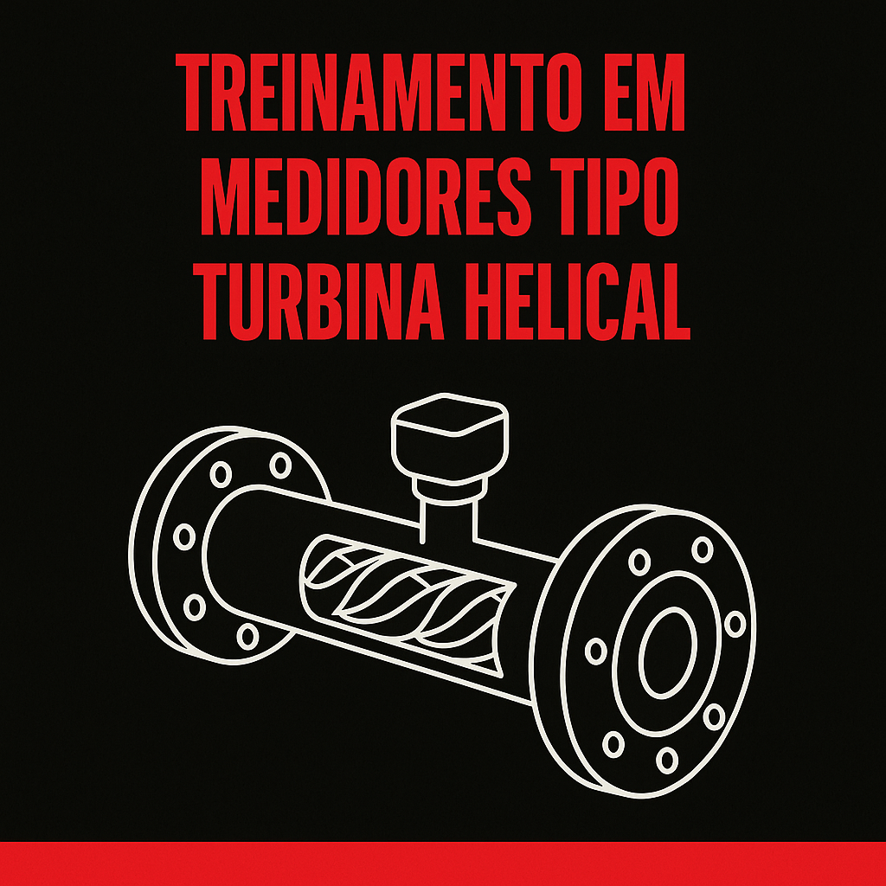
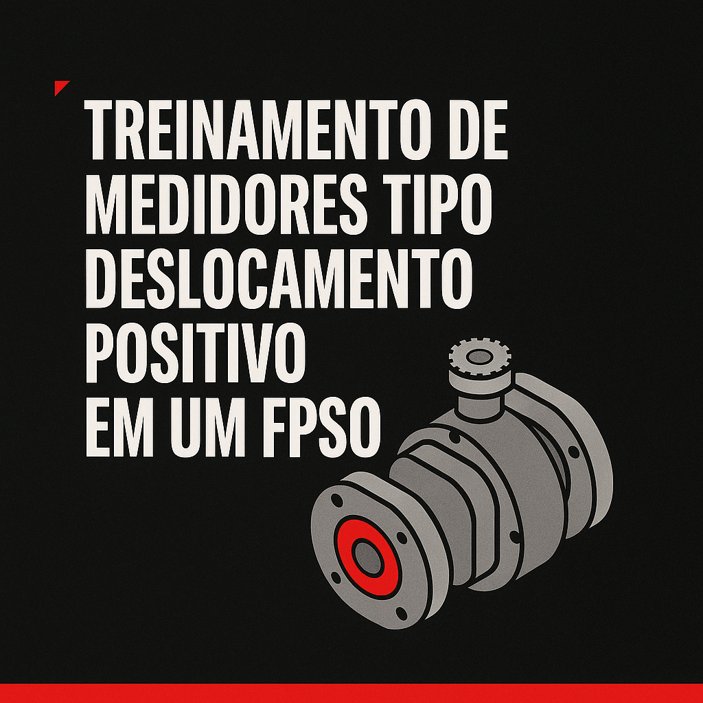
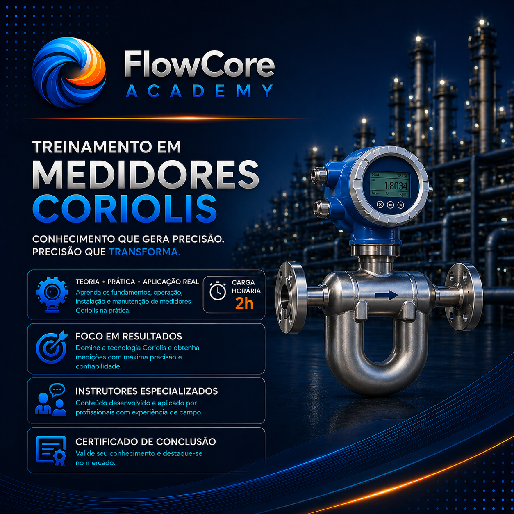
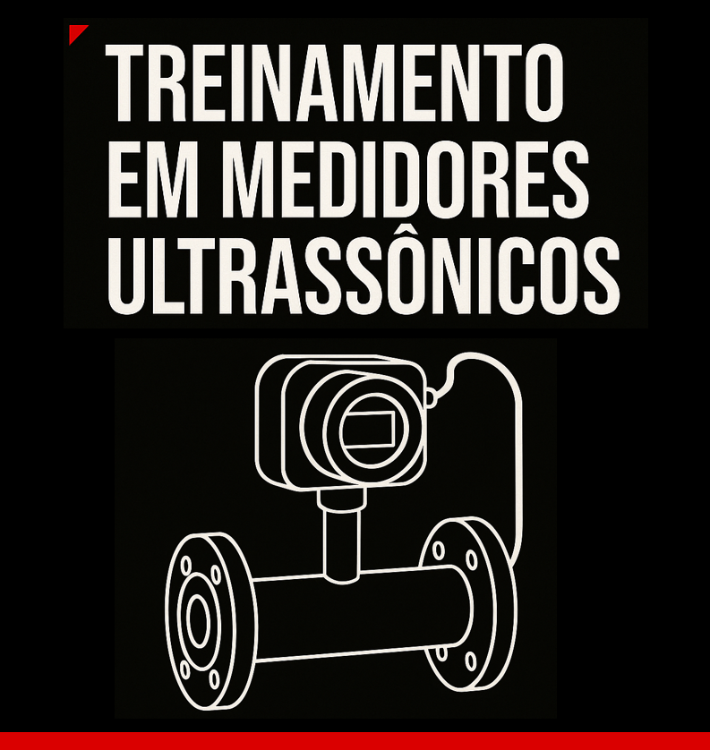
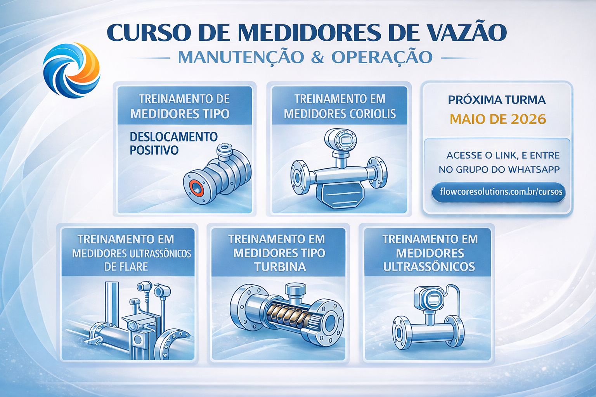

Cursos FlowCore
Medidores de vazão na prática
Treinamentos focados em quem precisa entender, operar e manter medidores de vazão em ambientes reais de produção. Turmas enxutas, linguagem direta e conexão com o dia a dia de FPSOs e plantas de processo.

Medidores Tipo Deslocamento Positivo

Medidores Coriolis
Medidores Ultrassônicos de Flare

Medidores Ultrassônicos

Medidores de Vazão com Ênfase em Manutenção
Curso completo de medidores de vazão com ênfase em manutenção
Turma voltada para quem responde por sistemas de medição e precisa tomar decisões seguras em campo, sem depender 100% do fabricante.
Próxima turma do curso completo de medidores de vazão
com ênfase em manutenção em
Março de 2026.
curso totalmente pensado para quem está no dia-a-dia em campo
detalhes do investimento, no grupo do whastapp acesse pelo botão abaixo.
Entrar no grupo da turma
↗
Para maiores informações, entre em contato pelo WhatsApp:
(21) 98371-0895
(21) 98371-0895